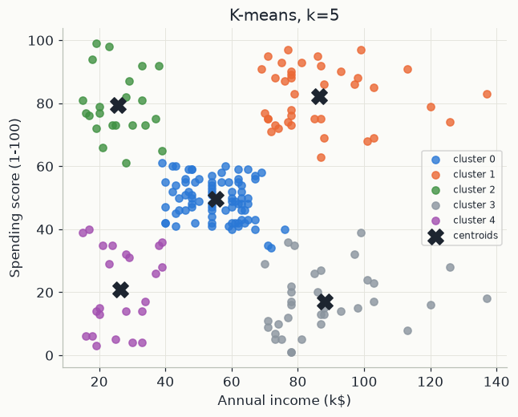

Eleven standalone notebooks, each covering one machine-learning idea start to finish, on real data: regression, the calculus that training is secretly doing, support vector machines, random forests, K-means, a neural network built from nothing but NumPy, transfer learning, LSTMs, an autoencoder that catches anomalies it was never shown, attention implemented by hand, and a from-scratch simulation of federated learning. No chapter depends on another — read the one you're curious about.

Most courses on this site follow a single dataset or a single system from first principles to a final test. This one doesn't: it's a tour. Each chapter is a different classical or modern method, trained on a different real (or, where a download would be the only obstacle, honestly synthetic) dataset, judged by whatever result actually matters for that method — an R², an accuracy, an inertia, a reconstruction error, a round of federated averaging. What ties the eleven chapters together is a shared discipline: every number on every page is the notebook's own output, every comparison has an honest baseline, and every method is shown earning its result rather than assumed to work.
This material reworks the author's own MADIS Machine Learning Workshop into runnable, standalone chapters. Two chapters are explicit reworkings of outside material, credited where they appear: chapter 04 (Random Forest) loosely follows a Kaggle tutorial's structure, and chapter 09 (Anomaly Detection) follows the general recipe of a well-known Keras example, both cited in the original workshop's own closing notes.
Chapters 01-02 are the foundations: fitting a line, and the calculus every model's training loop is quietly doing. Chapters 03-05 are the classical toolkit: SVMs, random forests, K-means. Chapters 06-10 are deep learning and modern architectures, built up from a from-scratch neural network to from-scratch self-attention. Chapter 11 closes with federated learning, simulated end to end from nothing the original workshop actually ran.
Every chapter page shows the notebook with its outputs, so you can read the whole course here. To run and
change the code, download the course (the notebooks, the shared
mlutils.py helpers, the data and the requirements), then from its folder run:
pip install -r requirements.txt
jupyter lab # then open any chapter directly, in any orderChapters 07-09 use TensorFlow/Keras and take longest (10-20 seconds each on a laptop); every other chapter runs in a few seconds. Every chapter ends with exercises, with solutions folded away.
Chapter 01 uses a small car-emissions dataset; chapter 03 uses Fisher's iris measurements; chapter 04 uses a real cardiac-evaluation dataset; chapter 05 uses a mall customer-segmentation dataset; chapter 09 uses Numenta Anomaly Benchmark (NAB) style synthetic sensor data; chapter 11 uses the Pima Indians Diabetes dataset. Chapters 02, 06, 07, 08 and 10 use synthetic or built-in (scikit-learn digits) data by design, so the mechanism being taught stays the whole story. Built on material from the author's own MADIS Machine Learning Workshop. Chapter 04 loosely follows the structure of Prashant Banerjee's Random Forest Classifier Tutorial on Kaggle; chapter 09 follows the general recipe of the Keras Timeseries anomaly detection using an Autoencoder example.